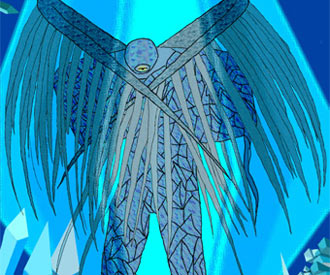
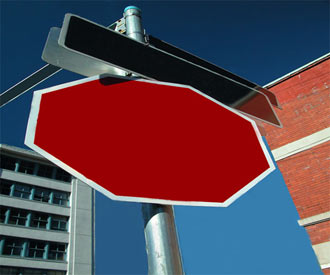
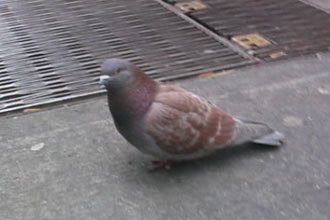
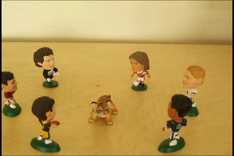
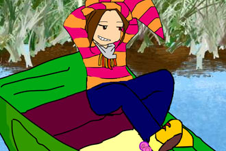

|
| |
Juried Student Exhibition Spring 06
|  Roberto Garcia. Lapis Lazur. digital image |
 Lisa Libertone. Stop Sign. digital print |
|  E. Bergrin, R Garcia, V Picciano. Silent Report. video |
 William DeMello. Pheonix & Savannah. computer drawing |
|  David Alves. Tiger's Last Stand. stop-motion video |
 Miao Jun Kuang. Rotten Fish. animation |
April 9 - 29, 2006
reception Tuesday April 25, 5-7 pm
163 William Street, New York, NY
with Peter Fingestin Gallery,
1 Pace Plaza, Level B
hours Tues - Fri 12am -6pm
works in print
by:
Christina
Circelli • Ashley Cunningham • William DeMello • Diana Diamond
• Roberto Garcia • Yoohwa Kim
Lisa Libertone • Victoria Picciano • Amy Rollo • Alexander
Wick • Tyneka Woods • Eldwin Kwan
works in Flash
by:
Christina Ford • Jun Kuang • Jennifer Palmerton • Vicky Picciano
• Amy Rollo
works in video
by:
David
Alves • Keith Behringer • Erik Bergrin • Abby Chan •
Roberto Garcia • Eldwin Kwan • Vicky Picciano •
and a group project from 3D design class